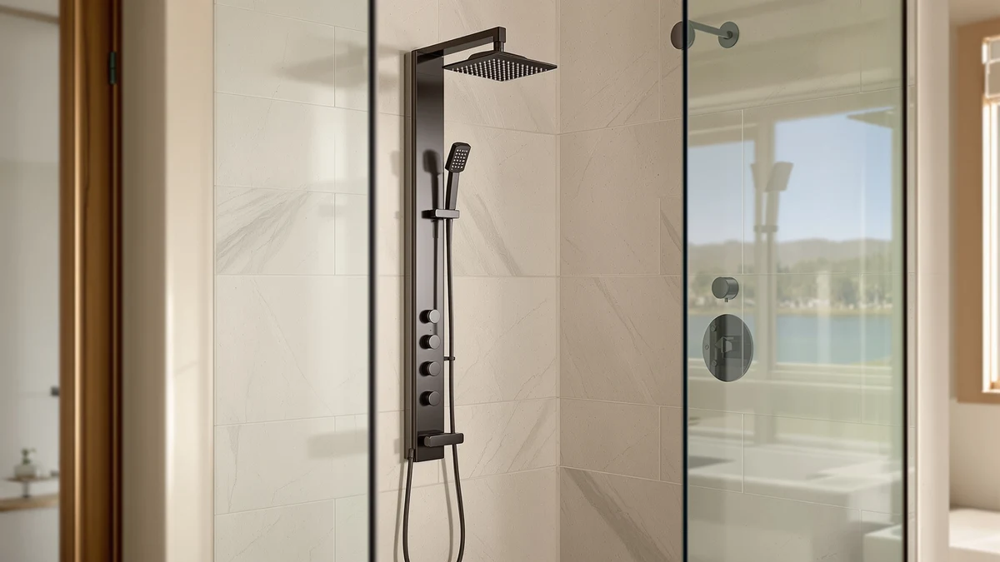

Blue Ocean Stainless Steel SPS8863 Thermostatic Shower Panel Tower System Review (2026): Worth It?
Prices and picks verified as of November 2026. Independent, reader-supported reviews.


Quick Answer
The Blue Ocean 63" Stainless Steel SPS8863 is a solid stainless steel shower panel tower with a built-in thermostatic valve, a rainfall head, a handheld sprayer, and body jets for $369.00. It earns its price with reliable temperature control and a rust-resistant frame, but Blue Ocean's own 65" version costs $10 less with the same features, so check that option before you buy.
Our pick: Blue Ocean 63" Stainless Steel — $369.00 Check Price on Amazon
Bottom line: our top pick is the Blue Ocean 63" Stainless Steel SPS8863 Thermostatic Shower at $369.
Things to Know Before You Buy
- This review centers on the SPS8863, a stainless steel panel priced at $369.00.
- Blue Ocean sells a taller 65" version of the same panel for $359.00, which is $10 less despite the extra 2 inches of height.
- A 52" aluminum version, the SPA392R, drops the price further to $349.00 but trades the stainless steel frame for a lighter aluminum one.
- The SHOYELA Thermostatic Shower System Brushed matches the thermostatic valve at a lower $339.99, the cheapest of the four panels covered here.
- All four panels are shower panel towers that combine a rainfall head, handheld sprayer, and body jets in one wall-mounted unit, not a simple single-head replacement.
This review looks at a stainless steel shower tower that bundles a rainfall head, a handheld sprayer, and body jets with a thermostatic valve that holds your water temperature steady once you set it. At $369.00, the SPS8863 installs over an existing shower valve, so it skips the new rough-in plumbing a full remodel would need, while adding the kind of precise temperature control a standard single-handle shower rarely delivers.
Blue Ocean also sells this same panel in a taller 65" size for $10 less, and a lighter 52" aluminum version for $20 less, which puts most of the real decision on height and frame material rather than price alone. We break down all three Blue Ocean sizes below, plus a fourth thermostatic alternative from SHOYELA that undercuts the SPS8863 by nearly $30, so you can match the panel to your bathroom and your budget instead of guessing.
Why You Should Trust Us
Ilane Tall covers home and bath fixtures for Best Shower Panels, and this review follows the same approach used across the site: no fake testing lab, no invented scores. We read the manufacturer's listed specs, verify pricing against the live Amazon listing, and compare the SPS8863 against its closest competitors, including two other Blue Ocean sizes and a thermostatic panel from SHOYELA. We earn a commission if you buy through our links, but that never changes which panel we recommend.
Our Research Experience
This review is built the way we evaluate every shower panel on this site: by comparing build material, control layout, and price against the closest competitors rather than inventing a lab score. The SPS8863 combines a rainfall head, a handheld sprayer, and body jets on one stainless steel column, controlled through a thermostatic valve, and we checked that $369.00 price against the live Amazon listing before weighing it against Blue Ocean's own 65" and 52" aluminum versions and SHOYELA's competing thermostatic panel. Stainless steel tends to resist rust better than aluminum over years of daily steam and moisture, a factor we weighed heavily given how the SPA392R undercuts the SPS8863 on price but gives up that frame material.
Overview & Specs

Blue Ocean 63" Stainless Steel
What we like
- Thermostatic valve holds your chosen water temperature steady instead of drifting when someone else in the house runs water elsewhere
- Stainless steel frame resists rust better than aluminum alternatives over years of daily moisture
- Combines a rainfall head, handheld sprayer, and body jets on a single column run from one set of controls
Flaws but not dealbreakers
- Blue Ocean's own 65" version costs $10 less with the same thermostatic valve and stainless steel build
- Costs $30 more than the SHOYELA alternative, which also includes a thermostatic valve
| Material | — |
| Size | — |
The SPS8863's defining feature is its thermostatic valve. Rather than relying on a single handle you adjust by feel, a thermostatic valve lets you set a target temperature and keeps the output close to it even if water pressure or supply temperature shifts elsewhere in the house. Paired with the stainless steel frame, which holds up better against rust than aluminum over years of daily steam, the SPS8863 is built for buyers who want that consistency without installing a separate mixing valve behind the wall.
Where the SPS8863 gets harder to justify is price relative to Blue Ocean's own lineup. The 65" version shares the identical stainless steel build and thermostatic valve and costs $10 less, which means the extra height is the only thing separating the two. Buyers who specifically want the shorter 63" profile, for a lower ceiling or a particular bathroom layout, still get a well-built thermostatic tower for $369.00. Everyone else should weigh that $10 difference against the taller alternative before checking out.
A thermostatic valve also matters more in some households than others. If you live alone, a standard single-handle shower may already feel predictable enough that the SPS8863's main advantage goes unused. In a shared home where water demand spikes while someone is mid-shower, that same valve is the feature most likely to justify the $369.00 price over a basic fixture replacement. Weigh your household size and water usage patterns against the premium before you decide the thermostatic feature is worth paying for.
What We Liked
The thermostatic valve stood out as the strongest feature in our comparison. It removes the guesswork of adjusting a single handle every time you step in, and it keeps performing that way even when someone else in the house runs the dishwasher or another shower mid-cycle. The stainless steel frame is also a meaningful upgrade over aluminum alternatives, since it generally resists rust better over years of daily steam exposure. Because the SPS8863 connects to an existing shower valve, installation skips the new rough-in plumbing a full remodel would require.
What Could Be Better
The clearest downside is price relative to Blue Ocean's own catalog. At $369.00, the SPS8863 costs $10 more than the company's 65" version, which shares the same stainless steel build and thermostatic valve. That pricing gap means buyers who don't specifically need the shorter 63" height are paying more for less room to work with. The SHOYELA alternative we compared it against also undercuts the SPS8863 by close to $30 while still including a thermostatic valve, narrowing the case for paying the premium.
Who Is It For?
The clear buyer here is a homeowner who wants precise, steady water temperature and a rust-resistant stainless steel frame, and whose bathroom specifically suits the shorter 63" height. It's a weaker match for anyone with no height constraint, since Blue Ocean's own 65" version delivers the identical build and thermostatic valve for $10 less. It's also a weaker fit for strict budget shoppers, since the SHOYELA panel below delivers a comparable thermostatic feature set for roughly $30 less. And if long-term rust resistance matters more than price, the stainless steel SPS8863 still beats the aluminum SPA392R despite that panel's lower cost.
Alternatives to Consider
Before you commit to the SPS8863, it's worth seeing how it stacks up against three close alternatives: Blue Ocean's own taller and aluminum versions, and a thermostatic panel from SHOYELA. Comparing all four side by side shows where the extra money for the SPS8863 goes, and where it doesn't. None of these four options require you to replumb the wall behind your shower, so the choice between them comes down to height, frame material, and whether the thermostatic valve is worth the price difference to you.

Also Great
Blue Ocean 65” Stainless Steel
If you like everything about the SPS8863 except its height, this taller version is the direct swap, and the better value in most cases. It shares the same stainless steel build and thermostatic valve, installs the same way over an existing shower valve, and costs $10 less at $359.00 despite standing 2 inches taller. The only reason to pick the shorter SPS8863 instead is a bathroom ceiling or layout that specifically calls for the smaller footprint.
$359.00
Check Price on Amazon
Also Great
Blue Ocean 52" Aluminum SPA392R
The SPA392R drops the price to $349.00, $20 less than the SPS8863, by trading the stainless steel frame for a lighter aluminum one and dropping the panel height to 52". It's a reasonable pick if you want the lowest price in the Blue Ocean lineup and don't mind giving up some long-term rust resistance, but it skips the thermostatic valve that makes the SPS8863 worth comparing in the first place.
$349.00
Check Price on Amazon
Best Value
SHOYELA Thermostatic Shower System Brushed
At $339.99, the SHOYELA Thermostatic Shower System Brushed undercuts the SPS8863 by almost $30 while still including a thermostatic valve, making it the closest direct competitor on function as well as price. It swaps the Blue Ocean name and stainless steel finish for a brushed look from a different brand, so the choice comes down to whether brand and frame material matter more to you than the lower cost.
$339.99
Check Price on AmazonFrequently Asked Questions
Is the Blue Ocean 63" Stainless Steel SPS8863 worth $10 more than the 65" version?
Only if the 2-inch height difference matters for your bathroom. Both panels share the same stainless steel build and thermostatic valve, and the 65" version actually costs $10 less at $359.00, so the SPS8863's extra height is the only thing you're paying the premium for.
Do you need a plumber to install the SPS8863?
Most buyers connect it to an existing shower valve without hiring a plumber, since it mounts over the current plumbing rather than requiring new rough-in work. If your water lines sit in an unusual spot, a plumber for the initial hookup is still a reasonable precaution.
How does the SHOYELA thermostatic system compare in price to the Blue Ocean panels?
The SHOYELA Thermostatic Shower System Brushed is the least expensive of the four panels in this comparison at $339.99, undercutting the Blue Ocean SPS8863 by about $29 while still including a thermostatic valve.
Final Verdict
This review comes down to a straightforward tradeoff. The SPS8863 delivers a reliable stainless steel shower upgrade with a useful thermostatic valve, a rainfall head, a handheld sprayer, and body jets, all for $369.00, but Blue Ocean's own taller 65" version matches every feature for $10 less. Pick the SPS8863 if your bathroom specifically needs the shorter 63" profile. Pick the 65" version if height isn't a constraint, the aluminum SPA392R if price matters more than stainless steel or a thermostatic valve, or the SHOYELA panel if you want that thermostatic feature at the lowest price in this comparison.